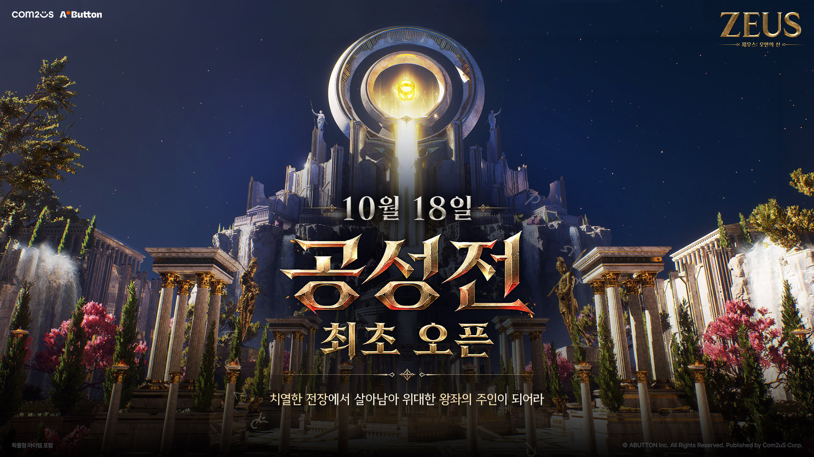
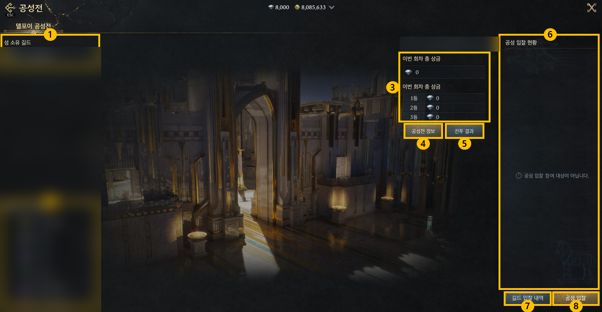
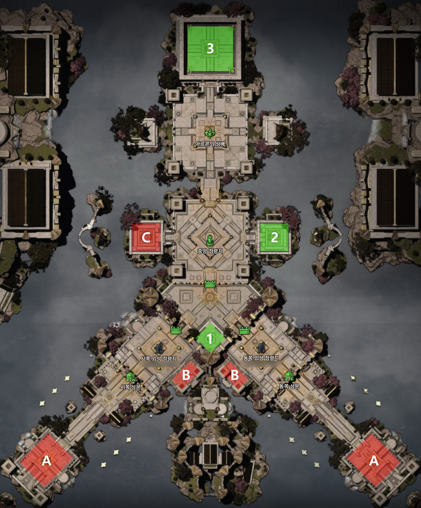
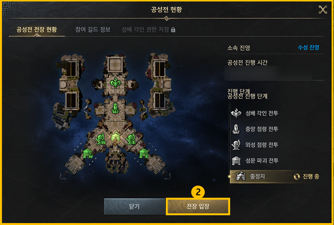
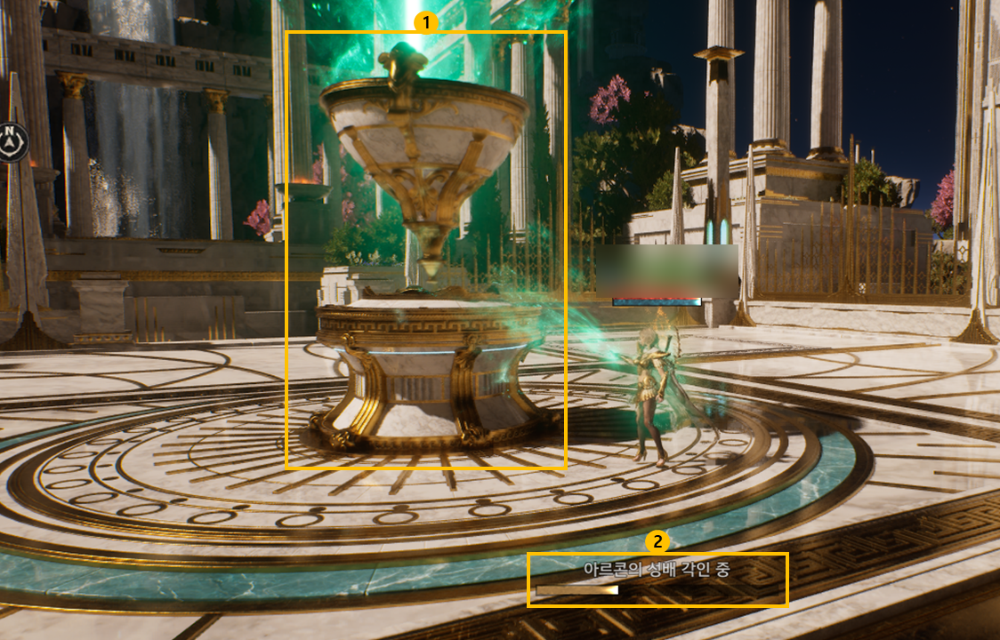
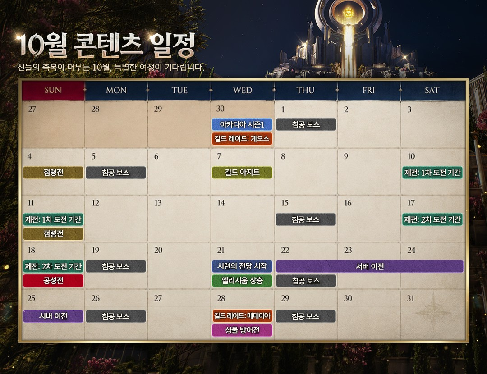

MMORPG 추천 제우스: 오만의 신 공성전 10월 18일 최초 오픈, 입찰·성배 각인부터 서버 이전까지 정리
이 게임은 확률형 아이템을 포함하고 있습니다.
2026년 10월 11일 기준으로 정리했어요. 점령전을 치른 길드가 다음으로 기다리는 건 10월 18일(일) 문을 여는 제우스: 오만의 신 공성전일 텐데요, 서버 이전과 10월 업데이트까지 짚어 볼게요.

공성전 최초 오픈, 10월 18일(일)이에요.
이미지 출처: 제우스: 오만의 신 공식 홈페이지
제우스: 오만의 신 공성전, 어떤 콘텐츠인가요
성 하나를 두고 길드 셋이 부딪히는 길드 전투예요. 수성 1곳에 공성 2곳이 붙어 이기는 길드가 성의 소유권을 가져가는데요, 공식 홍보 문구는 «치열한 전장에서 살아남아 위대한 왕좌의 주인이 되어라»예요.
| 항목 | 내용 |
|---|---|
| 최초 오픈 | 10월 18일(일) |
| 개방 조건 | 40레벨 달성, [메뉴] > [공성전] |
| 구도 | 수성 길드 1곳 + 공성 길드 2곳 |
| 목표 | 성문 → 외성 점령지 → 중앙 점령지를 넘어 아르콘의 성배 각인 |
| 보상 | 승리 길드는 성 소유권, 3개 길드는 순위별 공성 상금 |
점령전 규칙은 지난 추석 이벤트 정리 글에서 짚었으니 입찰 자격부터 볼게요.
공성전 입찰, 누가 어떻게 참여하나요
입찰은 길드원이 제작으로만 얻는 별도 아이템을 각자 걸어 순위를 가르는 방식이에요.
- 후보: 점령전에서 승리해 점령지를 보유한 길드예요. 게임뷰·게임플 보도에 따르면 11일 점령전에서 점령지를 차지한 6개 길드가 후보로 거론된다고 해요.
- 입찰 방식: 길드원이 각자 입찰하되, 정해진 수량을 채우지 못한 길드는 랭킹에서 빠져요. 성공하면 5초 쿨타임이 붙어요.
- 금액 공개: 순위 높은 일부 길드의 금액은 비공개고, 마감 1시간 전부터는 모든 금액이 비공개로 바뀌어요.
- 참여 제한: 참여 길드로 선정되면 공성전 기간 동안 길드를 옮기거나 내보내거나 해체할 수 없어요.
| 구분 | 수성 길드 | 공성 길드 |
|---|---|---|
| 성 소유 길드가 없을 때 | 입찰 1위 | 입찰 2~3위 |
| 성 소유 길드가 있을 때 | 성 소유 길드(입찰 없이 자동 참여) | 입찰 1~2위 |

공성전 입찰 화면이에요. 길드명은 가려 뒀어요.
이미지 출처: 제우스: 오만의 신 공식 홈페이지
공성전 전장은 성문 파괴에서 성배 각인까지 이어져요
공성 길드가 이기려면 성문, 외성, 중앙 점령지를 차례로 뚫고 성배까지 닿아야 해요.

아래에서 위로 성문, 외성, 중앙, 성배 순서예요.
이미지 출처: 제우스: 오만의 신 공식 홈페이지
- 성문 파괴: 서쪽과 동쪽 성문으로 나뉘어 진격하고, 직접 공격하거나 공성 병기로 부숴요.
- 외성 점령: 성문을 뚫으면 외성 점령지에 들어가요. 시작 4분 뒤 수호석이 공성 길드를 공격하고, 외성 점령지를 점령하면 멈춰요. 점령 점수에 반영되는 인원은 최대 30명이고 중앙 점령지도 같아요.
- 중앙 점령: 한 번 점령해도 일정 시간 뒤 다른 길드가 다시 점령할 수 있어요.
- 성배 각인: 각인 권한자는 길드별 최대 2명이고, 전투 전 공격대장이 정하면 바꿀 수 없어요. 각인 중 이동·사망·군중 제어를 받으면 중단돼요.

현황 창에는 출정지부터 성배 각인까지 단계가 이어지고, [전장 입장]으로 들어가요.
이미지 출처: 제우스: 오만의 신 공식 홈페이지
승리 판정은 공성전 시작 후 25분이 기준인데, 먼저 공수 전환이 뭔지부터 볼게요. 25분 전에 공성 길드가 성배 각인에 성공하면 그 길드가 수성으로, 기존 수성 길드가 공성으로 서로 자리를 바꿔요. 각인 성공이 곧바로 승리는 아니고 역할 교체일 뿐이에요.
| 진행 상황 | 승리 길드 |
|---|---|
| 공성전 시작 후 25분까지 공수 전환 없음 | 수성 길드 |
| 25분 이전 공수 전환(성배 각인 성공 시 공성↔수성 교체) | 25분 이후 가장 먼저 각인에 성공한 길드 |
| 공수 전환 뒤 공성전 시작 후 35분까지 추가 각인 없음 | 종료 시점에 성배를 점유한 길드 |

성배 각인은 이 바가 다 찰 때까지 끊기면 안 돼요.
이미지 출처: 제우스: 오만의 신 공식 홈페이지
다만 가이드가 테스트 버전 기준이라, 라이브에서 일부 달라질 수 있어요.
아직 알려지지 않은 것들
공식이 아직 밝히지 않은 것들은 표로 모아 뒀어요. 시작 시각과 상금 규모가 대표적이에요.
| 구분 | 공개된 것 | 아직 알려지지 않은 것 |
|---|---|---|
| 공성전 | 10월 18일(일) 오픈, 40레벨 개방 | 시작 시각, 입찰 시작·마감 시각, 길드별 입장 인원 |
| 입찰 | 제작으로만 얻는 별도 아이템 | 아이템 이름, 재료, 최소 수량 |
| 보상 | 순위별 공성 상금 차등 | 상금 규모, 순위별 비율 |
| 서버 이전 | 10월 22일(목)~25일(일), 인터서버군 묶음(기본 2개, 일부 3개)은 보도 기준 | 대상 서버 편성, 신청 방법, 비용 |
| 10월 14일 패치 | 스탯 제공량·클래스 방향 | 세부 수치(10월 11일 기준 패치 노트 미게시) |
제우스: 오만의 신 서버 이전은 10월 22일부터예요
서버 이전은 첫 공성전 이후인 10월 22일(목)부터 25일(일)까지 나흘간 진행돼요.
공식 이전 공지는 2026년 10월 11일 기준으로 아직 올라오지 않았는데요, 게임뷰·게임플의 라이브 정리 보도에 따르면 인터서버군을 기본 2개씩(일부 그룹은 3개) 묶어 그 안에서 옮기고, 묶는 기준은 점령전과 공성전 양상을 본 뒤 공지한다고 해요.
10월 21일에는 시련의 전당이 시작되는데요, 게임뷰·게임플 보도에 따르면 층마다 버프를 골라 오르는 개인 솔로 던전이라고 해요. 게임뷰는 길드 콘텐츠가 부담스러운 이용자를 위한 자리라고 전해요. 콜로세움 시즌 3도 같은 날 점검 후 11월 18일 05:00까지 4주간 이어져요.
제우스: 오만의 신 업데이트, 날짜순으로 보면 이래요
남은 10월 업데이트는 10월 14일 패치부터 11월 중순 코스튬 시스템까지 날짜별로 이어져요.

공식 10월 콘텐츠 캘린더예요. 14일 패치 내용과 11월 일정은 아래 표에 따로 모았어요.
이미지 출처: 제우스: 오만의 신 공식 홈페이지
| 날짜 | 내용 |
|---|---|
| 10월 14일(수) | 침공 보스 정식 도입, 신과 프리셋, 스탯 제공량 조정과 클래스 밸런스 |
| 10월 17일(토)~18일(일) | 제전 2차 도전 기간, 18일 공성전 |
| 10월 21일(수) | 시련의 전당, 엘리시움 상층, AI 모드 «대피» 버튼 |
| 10월 22일(목)~25일(일) | 서버 이전 |
| 10월 28일(수) | 길드 레이드 메데이아, 성물 방어전, 보상 즉시 수령 선택, 딜 미터기 |
| 11월 | 4일 메데이아 리뉴얼, 18일 코스튬 시스템, 11월 중 징표 시스템·사냥 중 PK 완화 |
14일 패치는 9월 23일 클래스 밸런스에 이어 이번엔 8개 클래스 전체가 대상이에요. 스탯 제공량 조정은 성장 차이가 큰 아르콘이 대규모로 맞붙는 전투에서 변화가 드러나게 하려는 의도라고 해요.
| 클래스 | 이렇게 바뀌어요 |
|---|---|
| 어쌔신 | 원거리·마법 계열을 노린 암살 능력을 특화 |
| 나이트 | 스킬 쿨다운과 기절 같은 군중 제어 효과가 일부 상향 |
| 버서커 | 일부 스킬은 모션이 바뀌고 스킬 메커니즘도 한층 강화 |
| 블레스드 | 스킬 모션이 큰 폭으로 달라짐 |
| 아티산 | PvP에서 발휘하는 능력이 일부 상향 |
| 레인저 | 데미지가 전반적으로 오르고 하트 시커도 함께 조정 |
| 엘리멘탈리스트 | 방어 쪽 능력이 보강 |
| 오라클 | 스스로를 치유할 때 공격 능력이 같이 보강 |
자주 묻는 질문
Q. 점령전은 몇 시에 열리나요?
점령전 가이드 기준으로 매주 일요일 20시에 시작해 5분 정비 후 1시간 진행되고, 40레벨부터 참여할 수 있어요.
Q. 제전의 «도전 기간»은 뭔가요?
아카디아 제전 가이드에 따르면 성장 기간 뒤에 오는 구간으로, 매칭된 상대 길드와 1:1 점령전을 치르는 기간이에요.
Q. 공성 상금은 어디서 나오나요?
게임뷰·게임플 보도에 따르면 거래소 세금 일부가 재원이고, 게임뷰는 현재 세율 7% 중 3~4% 안팎이 공성전 보상으로 제공될 예정이라고 전해요.
공성전 이후에도 꾸준히 즐기기 좋은 이유
제우스는 개발자 라이브와 개발자 노트로 일정과 방향을 계속 알려 주는 mmorpg라서, 업데이트를 따라가기 편하거든요. 10월 2일 개발자 라이브 뒤 10월 7일 여덟 번째 개발자 노트가 나왔어요.
공성전에 앞서 스탯 양과 클래스 밸런스를 먼저 손본다고 밝힌 점이 눈에 띄어요. 길드전이 중심인 MMORPG 추천작을 찾으셨다면 지켜볼 만해요. 새 소식은 공식 홈페이지, 공식 유튜브, 공식 카카오톡 채널에 올라와요.
입찰 자격은 11일 점령전 결과로 갈리니, 길드 소속이라면 점령전 현황 페이지부터 확인해 보세요.
✔ 제우스: 오만의 신 같이 보기 좋은 내용
· 대작 MMORPG 제우스: 오만의 신 추석이벤트 총정리, 신규 업데이트 점성술부터 서버보스까지
· 제우스오만의신 보스시간표변경 총정리, 9월23일 클래스밸런스 서버보스 예고까지
· MMORPG 제우스: 오만의 신 엘리멘탈리스트 육성 방법, 신과·에테리온 분배부터 에픽 허들 돌파까지
참고한 곳 (2026년 10월 11일 기준)
· 공성전 가이드
· 점령전 가이드
· 아카디아 제전 가이드
· 10월 일정 캘린더 공지
· 10월 7일 업데이트 안내
· 10월 7일 여덟 번째 개발자 노트
· 10월 2일 개발자 라이브
· 라이브 정리 보도: 게임뷰 · 게임플